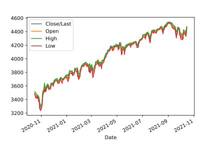
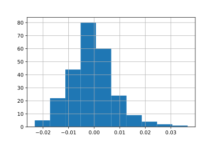

Loading and Plotting Financial Data
Posted on August 10, 2021
0.1 Python
Example file: /home/kali/Desktop/SPY.csv
| Date | Close | Volume | Open | High | Low |
|---|---|---|---|---|---|
| 1/1/2020 | 4471.31 | – | 4447.69 | 4475.82 | 4447.69 |
from pathlib import Path
import pandas as pd
mycsv = Path("/home/kali/Desktop/SPY.csv")
mycsv.exists()
#> True
#Pandas automatically takes the first line as the header row.
outDF=pd.read_csv(mycsv,
infer_datetime_format=True,
parse_dates=["Date"], #Convert "Date" :: object => "Date" :: datetime64[ns]
index_col="Date", #Set index from natural numbers to date
na_values="--")
print(outDF.dtypes)
# Close/Last float64
# Volume float64
# Open float64
# High float64
# Low float64
# dtype: object0.1.1 Plotting
import matplotlib.pyplot as plt
%matplotlib inline
plotDF = pd.DataFrame(outDF, index=outDF.index, columns=["Close/Last","Open", "High", "Low"])
plotDF.plot()
- Pandas Series analogous to a list
- Pandas DataFrame analogous to dictionary of series
0.1.1.1 Series
0.1.1.1.1 Convert DataFrame to Series - squeeze()
closeSERIES = outDF["Close/Last"].squeeze()0.1.1.1.2 Plotting a Series
closeSERIES.plot()0.1.2 Shifting by time
- Shifting a DF or Series is practically the same
- Need to make sure our index is a “datatime64[ns]” to use “freq” argument
shiftedDF=outDF.shift(periods=30, freq=None) # returns a new shifted DF by 30 days
shiftSERIES = closeSERIES.shift(periods=30, freq=None) Possible values for freq :: str
0.1.3 Getting daily % returns
- Note we don’t even have to use a .shift()
- forward fill missing data because backfill has lookahead bias
pctReturnSERIES = closeSERIES.pct_change(
periods=1,
fill_method ="ffill")
#default fill_method is 'pad' == 'ffill'0.1.3.0.1 Plotting histogram of % returns
pctReturnSERIES.hist()
0.1.4 Converting % returns into Categorical buckets with .cut()
- First let’s analyze returns of the SPY
pctReturnSERIES.describe()
# count 251.000000
# mean -0.000957
# std 0.008594
# min -0.023238
# 25% -0.006424 IQR lower bound
# 50% -0.001255 Median
# 75% 0.003340 IQR upper bound
# max 0.036579
# Name: Close/Last, dtype: float64- The
50%represents the median or most common return. (line 7) - (
25% 75%) is the IQR or where our returns will lie half of the time. (line 6+8)- half of the time, we will see a return that lies in the interval
[-0.6424%, 0.3340%]
- half of the time, we will see a return that lies in the interval
Prefer IQR over std because IQR is a frequency measure resistant to outliers while std depends on the mean.
0.2 Mathematica
CandlestickChart[{"SPY", {{2020, 1, 1}, {2021, 10, 20}}}]